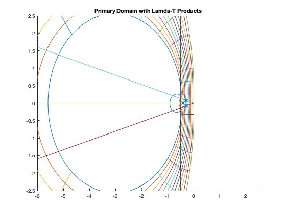

Contents
clc; close all;
PART C
Nt=21;
Nr=12;
num = [0.46 0.29 -0.32]
den = [1 -1.56 0.56]
Hp = tf(num, den)
zeros = roots(num)
poles = roots(den)
Phi = tf(den, num)
newNum = [10076 -11552 3368]
badPoints = roots(newNum)
magnitude = abs(badPoints)
theta=linspace(0,2*pi,1001);
rho=linspace(0.595,1,1001);
tvec=linspace(0,2*pi,Nt);
rvec=linspace(0.595,1,Nr);
temp = (roots(den - num*0.5764));
mag = abs(temp)
ang = angle(temp)
for k=1:length(rvec)
z=rvec(k)*exp(i*theta);
w = (z.^2-z.*1.56 + 0.56)./(z.^2.*0.46+z.*0.29-0.32);
hold on
plot(real(w), imag(w))
hold off
end
for k=1:length(tvec)-1
z=rho*exp(i*tvec(k));
w = (z.^2-z.*1.56 + 0.56)./(z.^2.*0.46+z.*0.29-0.32);
hold on
plot(real(w), imag(w))
hold off
end
grid on
axis([-25 2.5 -15 15])
title('Primary Domain Stability Plot')
num =
0.4600 0.2900 -0.3200
den =
1.0000 -1.5600 0.5600
Hp =
0.46 s^2 + 0.29 s - 0.32
------------------------
s^2 - 1.56 s + 0.56
Continuous-time transfer function.
zeros =
-1.2069
0.5764
poles =
1.0000
0.5600
Phi =
s^2 - 1.56 s + 0.56
------------------------
0.46 s^2 + 0.29 s - 0.32
Continuous-time transfer function.
newNum =
10076 -11552 3368
badPoints =
0.5732 + 0.0752i
0.5732 - 0.0752i
magnitude =
0.5782
0.5782
mag =
1.7818
0.5686
ang =
0
0
PART D
A = [-4.7, -1.55, -0.55; 0.3, -2.75, -0.35; 1.1, 1.85, -2.55]
B = [1; 0; -1]
C = [2, 1, 1]
D = [0]
lamda = eig(A)
figure;
for k=1:length(rvec)
z=rvec(k)*exp(i*theta);
w = (z.^2-z.*1.56 + 0.56)./(z.^2.*0.46+z.*0.29-0.32);
hold on
plot(real(w), imag(w))
hold off
end
for k=1:length(tvec)-1
z=rho*exp(i*tvec(k));
w = (z.^2-z.*1.56 + 0.56)./(z.^2.*0.46+z.*0.29-0.32);
hold on
plot(real(w), imag(w))
hold off
end
axis([-6 2.5 -2.5 2.5])
title('Primary Domain with Lamda-T Products')
T = linspace(0,2,1001);
hold on
plot(real(lamda(1)*T), imag(lamda(1)*T))
plot(real(lamda(2)*T), imag(lamda(2)*T))
plot(real(lamda(3)*T), imag(lamda(3)*T))
hold off
disp('Stable, and accurate, values for T would be located inside of the green incompassing line and to the right of the black line in Figure 2')
disp("Using lamda-T products from Problem 3, this would give us T = 0.1 -> Shown by the 'x's on Figure 2")
stable_acc = 0.1;
hold on
plot([-0.5 -0.5], [-20 20], 'black')
hold off
hold on
plot(real(stable_acc * lamda), imag(stable_acc * lamda), 'x')
hold off
A =
-4.7000 -1.5500 -0.5500
0.3000 -2.7500 -0.3500
1.1000 1.8500 -2.5500
B =
1
0
-1
C =
2 1 1
D =
0
lamda =
-4.0000 + 0.0000i
-3.0000 + 0.8000i
-3.0000 - 0.8000i
Stable, and accurate, values for T would be located inside of the green incompassing line and to the right of the black line in Figure 2
Using lamda-T products from Problem 3, this would give us T = 0.1 -> Shown by the 'x's on Figure 2

PART E
figure;
for k=1:length(rvec)
z=rvec(k)*exp(i*theta);
w = (z.^2-z.*1.56 + 0.56)./(z.^2.*0.46+z.*0.29-0.32);
hold on
plot(real(w), imag(w), 'r')
hold off
end
for k=1:length(tvec)-1
z=rho*exp(i*tvec(k));
w = (z.^2-z.*1.56 + 0.56)./(z.^2.*0.46+z.*0.29-0.32);
hold on
plot(real(w), imag(w), 'r')
hold off
end
theta=linspace(0,2*pi,1001);
rho=linspace(0.6192,1,1001);
tvec=linspace(0,2*pi,Nt);
rvec=linspace(0.6192,1,Nr);
for k=1:length(rvec)
z=rvec(k)*exp(i*theta);
w=(z.^2-z.*1.45 + 0.45)./(z.*1.27-0.73);
hold on
plot(real(w), imag(w), 'b')
hold off
end
for k=1:length(tvec)-1
z=rho*exp(i*tvec(k));
w=(z.^2-z.*1.45 + 0.45)./(z.*1.27-0.73);
hold on
plot(real(w), imag(w), 'b')
hold off
end
grid on
axis([-3 1 -1.5 1.5])
title('Corrector and Predictor Stability Plots')
disp(' ')
disp('Stability plot for the predictor is in blue and the stability plot for corrector is in red')
disp('You can see that the plots are similiar, but the corrector plot is much larger')
Stability plot for the predictor is in blue and the stability plot for corrector is in red
You can see that the plots are similiar, but the corrector plot is much larger